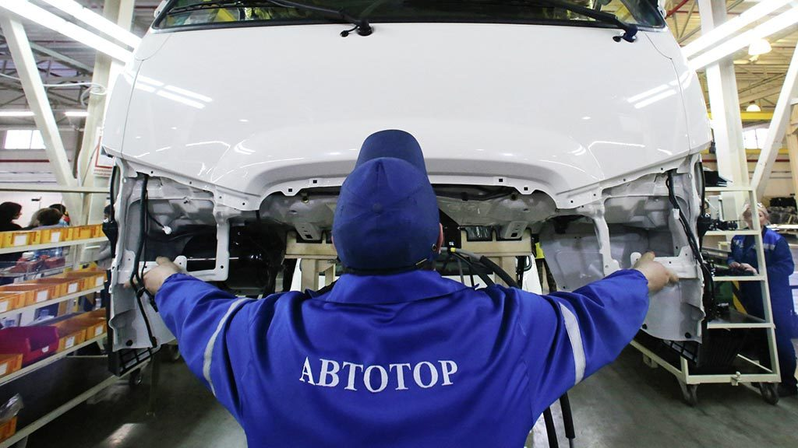
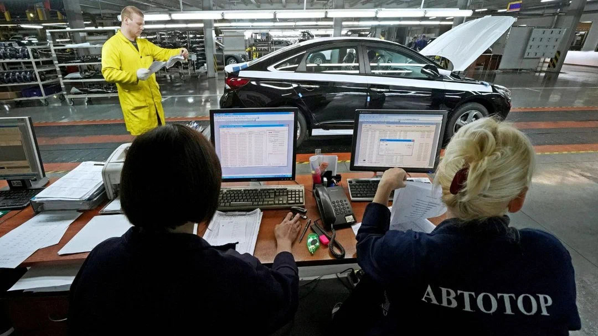

«Автотор» выпустит российские электромобили в 2023 году
Калининградское автосборочное предприятие «Автотор», ранее выпускавшее автомобили иностранных марок и ушедшее в простой на фоне санкций, намерено представить модели российских электромобилей в 2023 году. Председатель совета директоров предприятия Валерий Горбунов сообщил, что выпущенные калининградской компанией авто смогут конкурировать с электромобилями Tesla.
«Задача, которую мы решаем сегодня,— локализовать все ключевые компоненты силовой установки электромобиля и ряд других… Все они, конечно же, не должны зависеть от импортных комплектующих… Могу сказать, что цена будет намного ниже, чем Tesla и другие подобные автомобили»,— рассказал господин Горбунов в интервью ТАСС о перспективах создания отечественного электромобиля.
Он подчеркнул, что «Автотор» намерен произвести не гибридный, а «чистый» электромобиль, поскольку руководство концерна считает авто с электрическими и газомоторными двигателями более инновационными.
«Автотор» был основан в 1996 году и занимался сборкой автомобилей марок BMW, Ford, Hyundai и KIA. В мае предприятие не вышло из корпоративного отпуска и начало простаивать из-за отсутствия зарубежных комплектующих. Сотрудникам компании была предложена работа по сбору ягод.